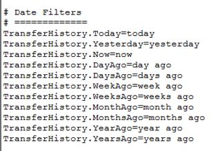
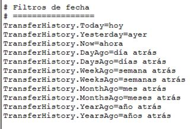

To add support for a new language to the base pages:
-
Create a resource file for each language that you want to support. Use the
VLPortal.properties file as a template for the desired
language. For example, if you want to add web portal Spanish language
support (that has the ISO-639-1 language code of ‘es’), you would copy the
VLPortal.properties file (from the
webserver\VLPortal\internationalization directory) to
VLPortal_es.properties.
-
Open this newly created properties file in a text editor and translate all the
text after the ‘=’ character into the desired language for each property
provided in this file. In our example, we are translating to Spanish. Do not add
a space after the ‘=’ character.
Example:
The original English translation:

The same properties translated to Spanish:

Note: Any lines preceded by one or more ‘#’ characters is a comment and is
ignored by the Cleo Harmony application. These lines are not required to be
translated.
-
Import the translated resource file(s) into the Cleo Harmony application using the Import…
button in the Maintaining the Web Page Catalog dialog.
Note: Do not copy the resource file(s) directly into the
webserver\VLPortal\internationalization
directory. In order for the resource file(s) to be properly registered in
the Cleo Harmony application, they must be imported. This applies to
newly created resource files or modified resource file. In all cases, the
files must be imported rather than directly copied.
-
For each web page listed in the VLPortal Web Page
Catalog, add an entry for the newly configured language. Right-click
each web page entry and select Edit….
-
If a prompt appears showing the associated web portals and asking if
you are sure you want to edit it, select
Yes.
-
From the Language drop-down selector in the upper-right corner,
choose the newly imported language.
-
Add the page title content in the appropriate language and click
OK.
Note: At a minimum, the above steps should be performed for the four
baseline standard web pages (that is, Cleo Harmony Web Portal, Manual File Transfer, File Transfer
History, and Cleo Harmony Web Portal Help). If any of these pages are
missing a particular language variant, an asterisk (*) is displayed next
to the language in theWeb Portals table in the
VLPortal tab.
See Configuring VLPortal Web Browser service.
-
Additionally, web portal users selecting this language will not be able to view
the missing language variants. Further, if all the pages are missing, users will
not be able to log into the web portal. When missing pages are encountered, a
warning message is logged to the Cleo Harmony console each time the web portal user logs in.
-
If it is necessary to remove a page for a specific language variant and it is
not the only language configured for that page:
-
Edit the desired page.
-
Select the language variant from the list.
-
Clear the Title text and click OK.
You are prompted to be sure you want to proceed.
-
Click Yes to complete the process.